P8 联接与运动
零件都做好了，但现在它们只是“摆”在一起：用鼠标一拖，靠背会整个飘走。这一页告诉 Fusion 零件之间的关系：底座固定不动；靠背绕铰链转，最多往前折 65°、往后仰 15°；旋钮、螺丝跟着底座，螺母跟着靠背。
第 1 步：固定底座#
- 浏览器里右键「底座:1」→「固定」。
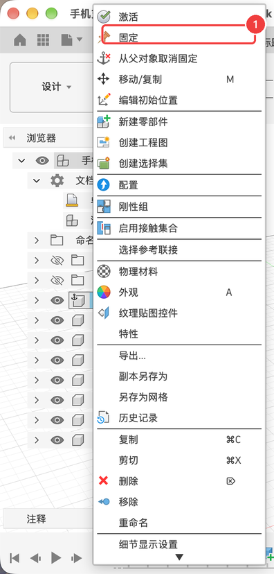
固定后，浏览器里底座的图标上多了一个图钉。被固定的零件不会被拖动，也不会被联接带着跑，其他零件都相对它运动。
第 2 步：靠背和底座之间的旋转联接#
靠背已经摆在正确的位置上了，用「快速联接」最省事：它不会移动零件，只是规定“从现在的位置开始，能怎么动”。
- 为了看得清楚，先在浏览器里把旋钮、螺丝、螺母点小眼睛隐藏。
- 「装配 ▾ → 快速联接」。
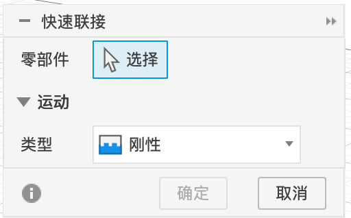
- 在画布上点靠背，再点底座。「零部件」变成“2 已选定”。
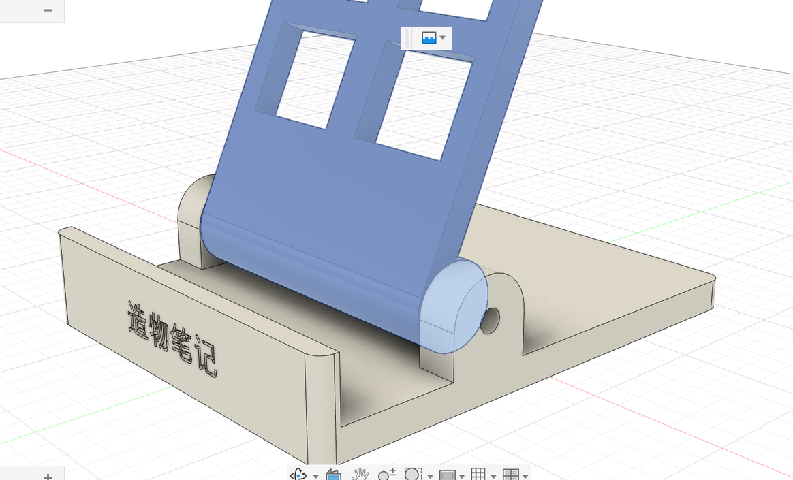
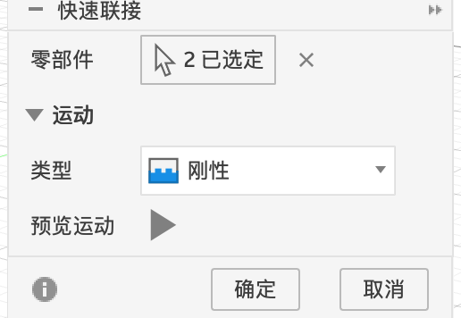
- 「类型」下拉选「旋转」。

- 选了旋转之后，对话框多出「原点模式」和「捕捉」：要告诉 Fusion 绕哪根轴转。把鼠标移到右耳外侧铰链孔的边上，孔的中心会出现一个捕捉点（小圆和三根轴的标记），点它。
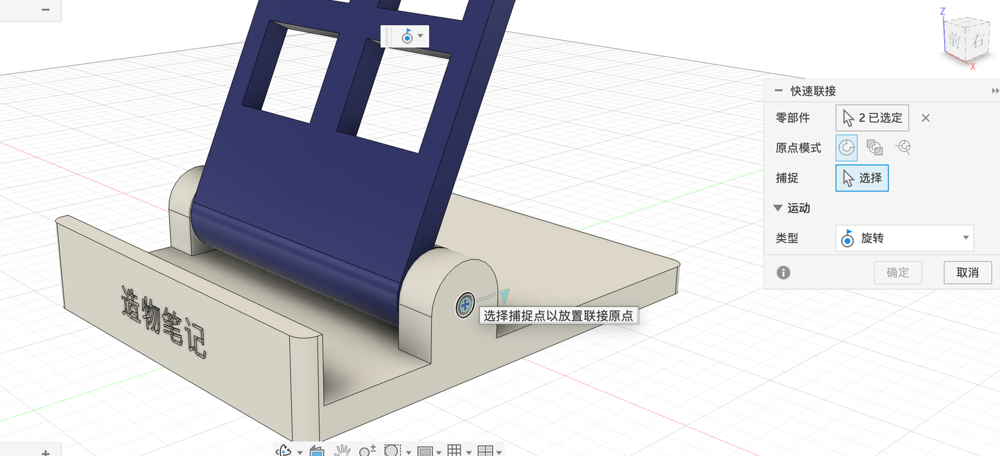
- 选好后，对话框里出现「联接运动限制」。勾选「最小值」填
-65，勾选「最大值」填15（单位是度）。 - 点「确定」。
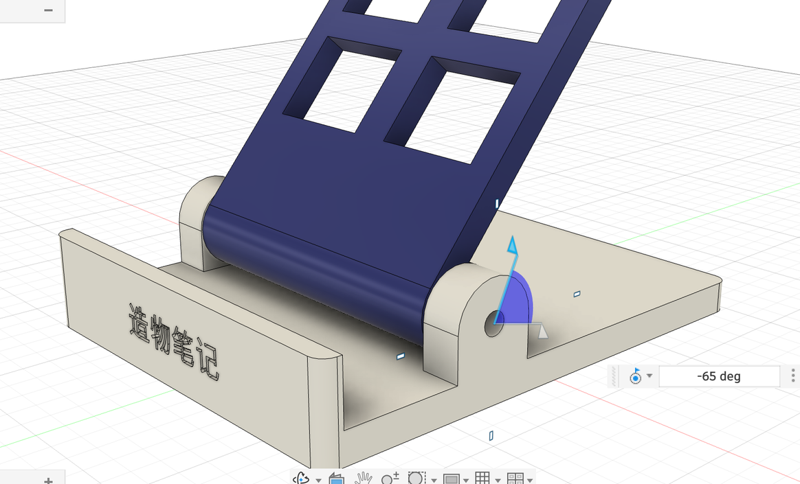

快速联接
| 选项 | 含义 | 本例 |
|---|---|---|
| 零部件 | 要建立关系的两个零部件 | 靠背、底座 |
| 原点模式 | 怎么确定旋转中心：简单（点一个捕捉点）/ 两条边之间 / 两个面之间 | 简单 |
| 捕捉 | 旋转中心点。鼠标在圆边上会自动捕捉圆心 | 铰链孔圆心 |
| 类型 | 运动方式（见 1.5） | 旋转 |
| 旋转 | 绕捕捉点的哪根轴转：X / Y / Z 轴。注意这里的 X / Y / Z 是捕捉点自己的小坐标轴（画布上那个三色小箭头），不是整个设计的坐标轴：在圆孔上捕捉时，它的 Z 轴总是垂直于孔所在的面，也就是孔的中心线 | Z 轴（就是铰链轴） |
| 联接运动限制 | 最小值 / 最大值：转动的范围；复位点：松手后回到的角度 | −65 / 15 |
第 3 步：刚性组#
旋钮、螺丝应该跟着底座不动，螺母应该跟着靠背转。最快的办法是刚性组：组里的零件像焊在一起。
- 浏览器里把隐藏的零件点回来。
- 按住 ⇧ 选 靠背、两个螺母，「装配 ▾ → 刚性组」，点「确定」。
- 再选 底座、两个旋钮、两颗螺丝，同样建一个刚性组。
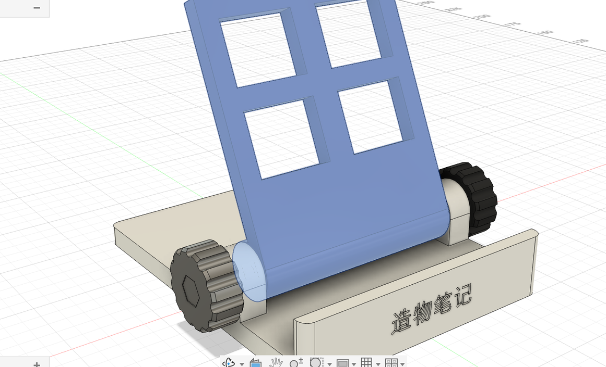
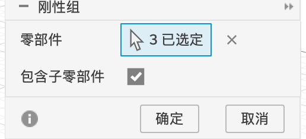
第 4 步：动起来#
现在用鼠标按住靠背往前、往后拖，它会绕铰链转，到 −65° 和 15° 就停住；螺母跟着走，旋钮不动。
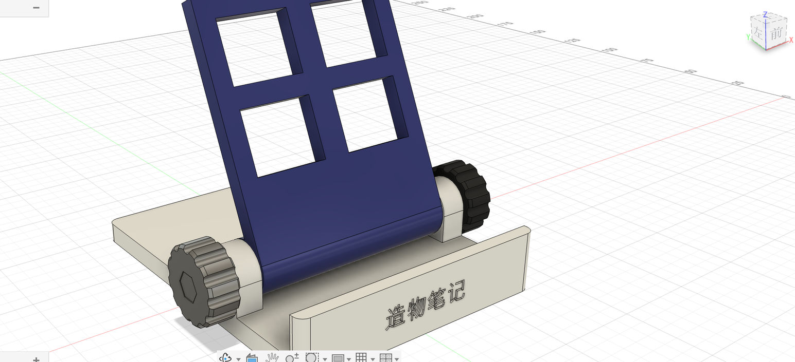
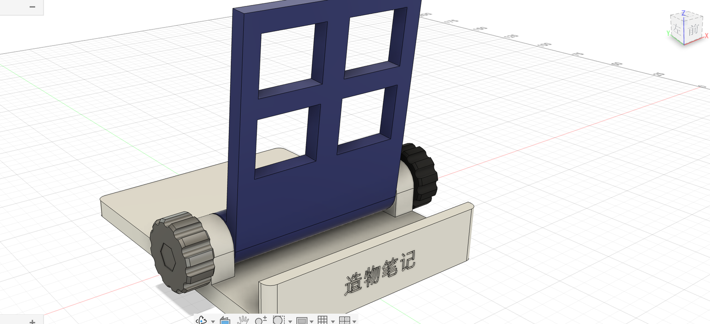
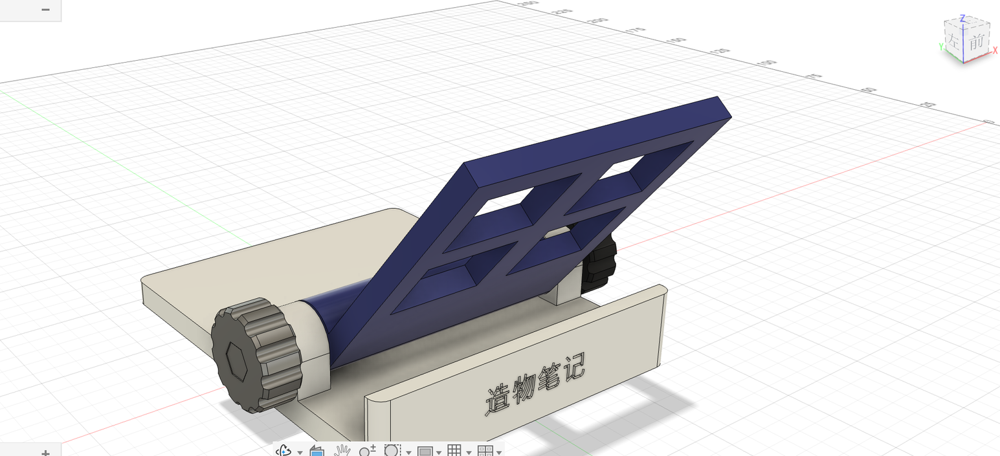
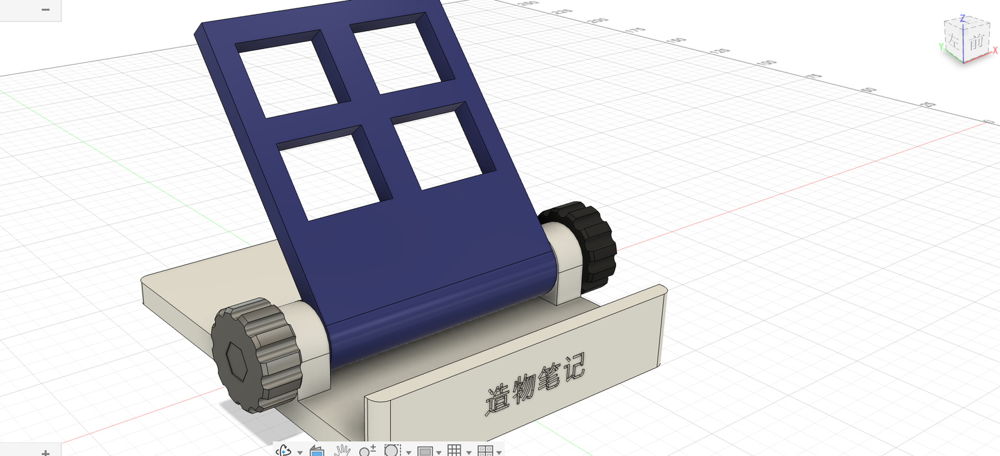
第 5 步：运动分析（自动播放）#
拖动只能手动看。「运动分析」能让靠背按你设定的角度自动动起来，像播放一段动画。它的面板是一张图：横轴是“第几步”（0～100，相当于时间），纵轴是联接的角度。
- 「装配 ▾ → 运动分析」。画布上弹出「运动分析」面板，提示“选择要创建动画的联接”。
- 在浏览器里展开「关系 → 联接」，点「旋转 1」（也可以点画布上的联接符号）。它出现在面板右边的列表里，图上多了一条水平的红线：现在每一步都是 0°。
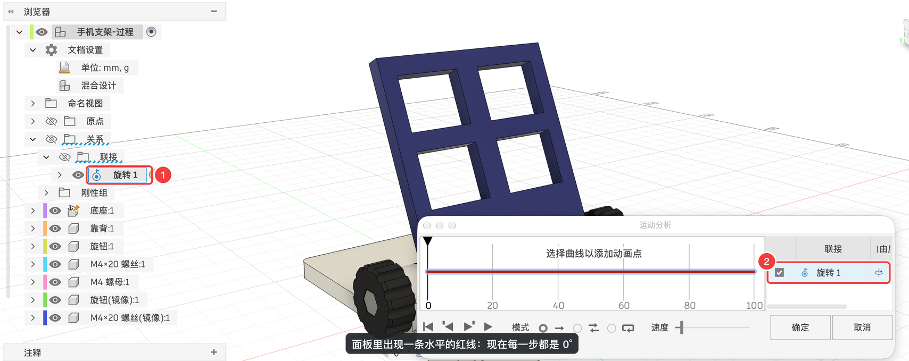
- 在红线上第 50 步左右点一下，加一个点，旁边弹出这个点的「角度」和「步骤」。
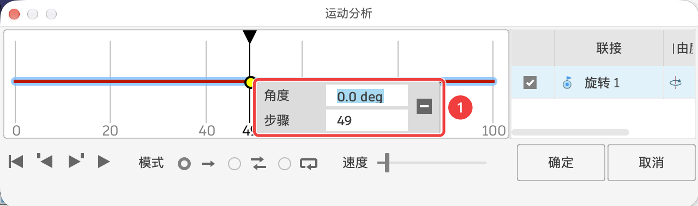
- 把这个点往下拖到最低（或者在「角度」框里输入
-65 deg，按 enter；Mac 笔记本是 fn + return，实测只按 return 不生效），角度变成 −65°，画布上的靠背跟着折平。 - 在红线快到头的地方（第 97 步左右）再点一下加一个点，「角度」输入
0 deg按 enter。曲线变成“0 → −65° → 0”。
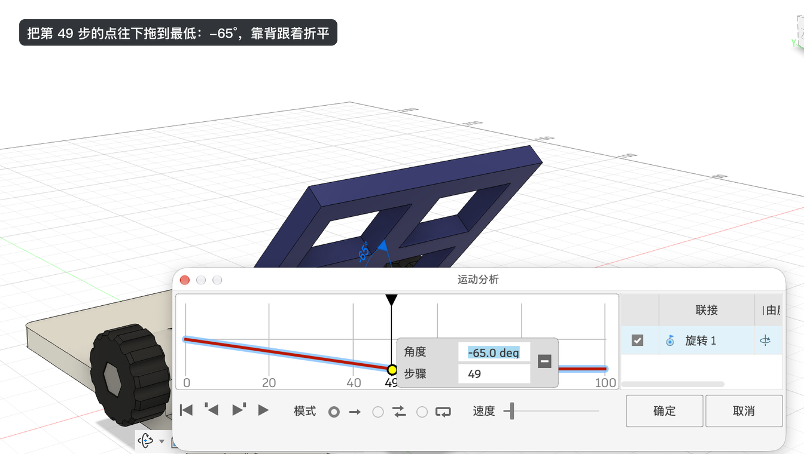
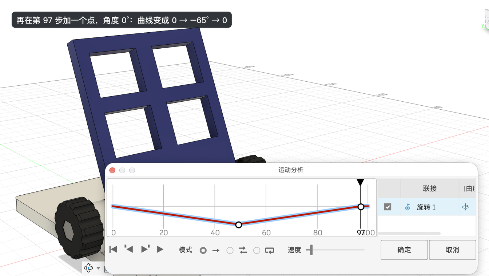
- 点面板左下角的 ▶ 播放：靠背会自动折下去、再立起来。旁边的「模式」可以选播放一次 / 来回播放 / 循环播放，「速度」滑块调快慢。
- 点「确定」会把这段运动保存到浏览器里（以后可以再打开播放）；只是看看就点「取消」。